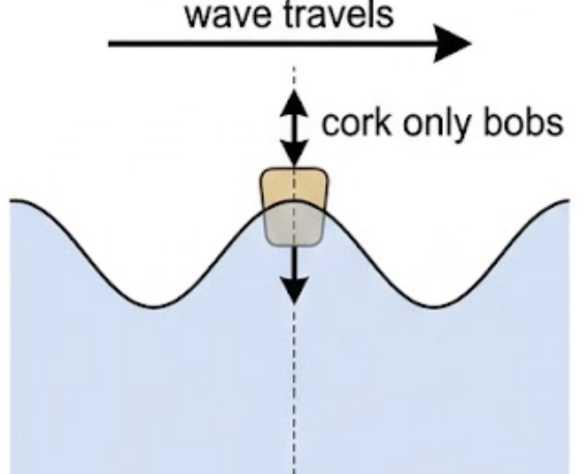
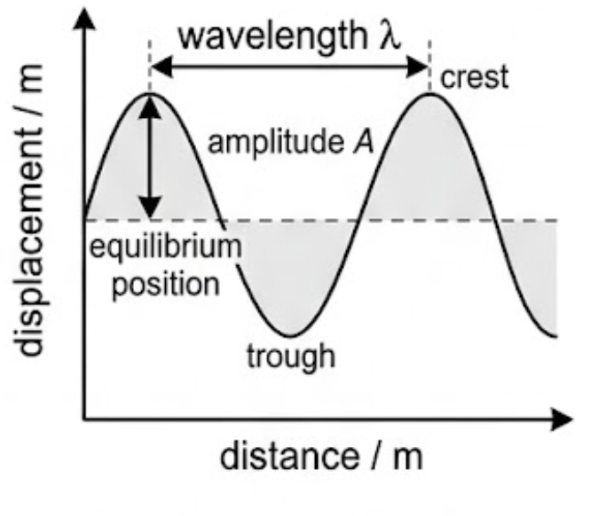
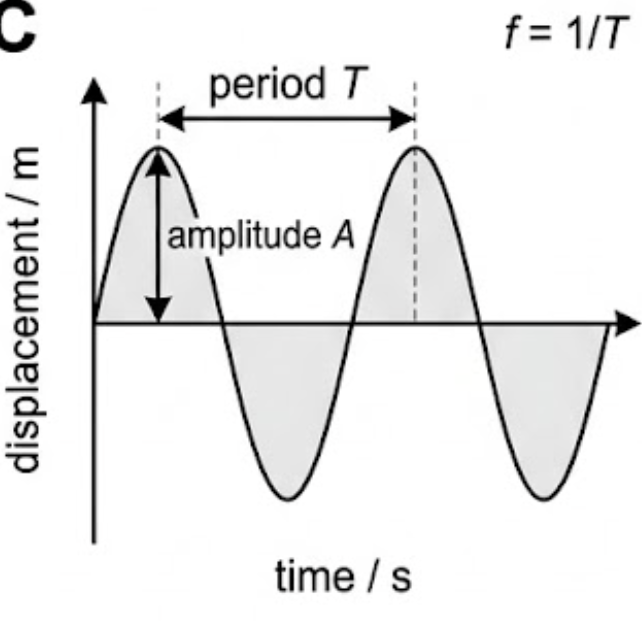
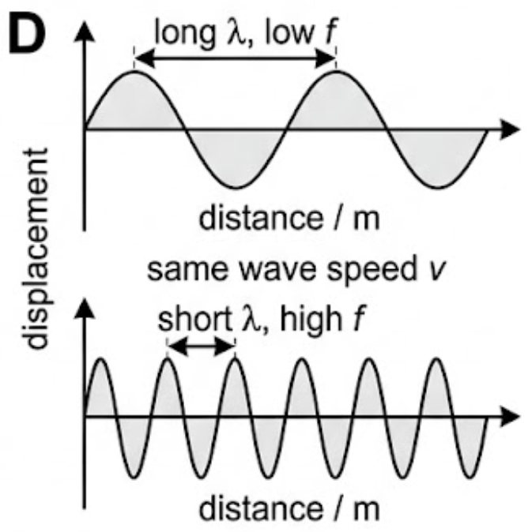
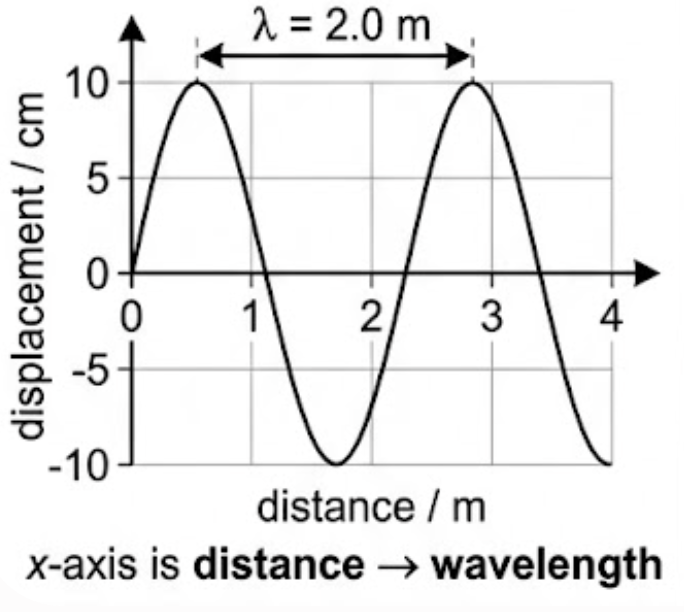
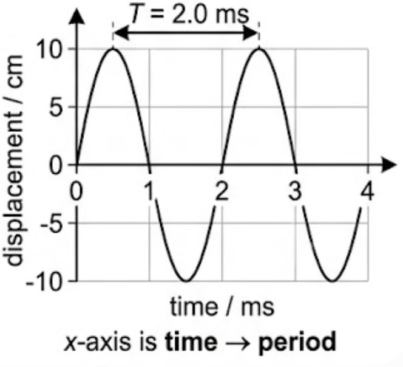
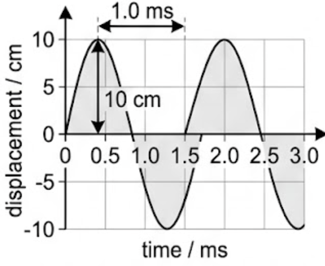
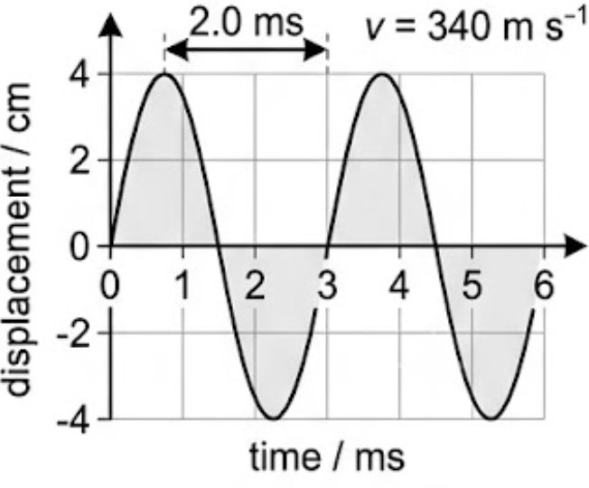

🎯 Hook – the cork that goes nowhere
Drop a cork on a pond and send a ripple past it: the cork bobs up and down, then sits exactly where it started. Something clearly travelled across the water, but the water did not. Travelling waves are defined as: oscillations that transfer energy from one place to another without transferring matter.
Waves transfer energy, not matter. Waves are generated by oscillating sources, and these oscillations travel away from the source. Oscillations can propagate through a medium (e.g. air, water) or in a vacuum (i.e. no particles), depending on the type of wave.

📐 Displacement, wavelength and amplitude
The key properties of travelling waves are: displacement, wavelength, amplitude, period, frequency and wave speed. The first three are all lengths, read off a snapshot of the wave.
Displacement \(x\) of a wave is the distance of a point on the wave from its equilibrium position. It is a vector quantity; it can be positive or negative. Measured in metres (m).
Wavelength \(\lambda\) is the length of one complete oscillation measured from the same point on two consecutive waves — for example, two crests, or two troughs. Measured in metres (m).
Amplitude \(A\) is the maximum displacement of an oscillating wave from its equilibrium position (\(x = 0\)). Amplitude can be positive or negative depending on the direction of the displacement. Measured in metres (m). Where the wave has 0 amplitude (the horizontal line) is referred to as the equilibrium position.

⏱️ Period and frequency
Period (\(T\)) is the time taken for a complete oscillation to pass a fixed point. Measured in seconds (s).
Frequency (\(f\)) is the number of complete oscillations to pass a fixed point per second. Measured in Hertz (Hz).
The frequency, \(f\), and the period, \(T\), of a travelling wave are related to each other by the equation:
Where \(f\) = frequency (Hz) and \(T\) = time period (s).

🚀 Wave speed and the wave equation
Wave speed (\(v\)) is the distance travelled by the wave per unit time. Measured in metres per second (m s⁻¹). The wave speed is defined by the equation:
Where \(v\) = wave speed (m s⁻¹) and \(\lambda\) = wavelength (m). This is referred to as the wave equation. It tells us that for a wave of constant speed: as the wavelength increases, the frequency decreases; as the wavelength decreases, the frequency increases.

📈 Graphs every examiner uses
You must be able to interpret different properties of waves from a variety of graphs. Calculating the time period and the wavelength looks very similar — both are the extent of one full wave — so the axis decides which one you have found.
| Graph type | Axes (X, Y) | Shape | What to read |
|---|---|---|---|
| Snapshot | distance / m, displacement \(x\) | Sine curve in space, repeating every \(\lambda\) | Amplitude from the equilibrium line to a crest; wavelength crest-to-crest |
| Oscillation | time / s, displacement \(x\) | Sine curve in time, repeating every \(T\) | Amplitude as before; period crest-to-crest, then \(f = 1/T\) |
| Both together | read \(\lambda\) from one, \(T\) from the other | Two sine curves of the same amplitude | \(v = \lambda/T\) — the only way to get the speed from graphs alone |


✍️ Worked example 1 – amplitude and frequency from a graph
The graph below shows a travelling wave. Determine: (a) the amplitude \(A\) of the wave, in m; (b) the frequency \(f\) of the wave, in Hz.
\(A = 0.1\ \text{m}\)
\(T = 1 \times 10^{-3}\ \text{s}\)
\(f = \dfrac{1}{1\times10^{-3}}\)

✍️ Worked example 2 – wavelength from a period and a speed
A travelling wave has a period of 1.0 μs and travels at a velocity of 100 cm s⁻¹. Calculate the wavelength of the wave, in m.
\(f = \dfrac{1}{1\times10^{-6}} = 1\times10^{6}\ \text{Hz}\)
\(\lambda = \dfrac{v}{f}\)
\(\lambda = 1.0\times10^{-6}\ \text{m}\)
🎧 Real-world: why bass reaches you first through a wall
Sound in air travels at about 340 m s⁻¹ whatever its pitch, so \(v = f\lambda\) fixes the wavelength: a 40 Hz bass note is about 8.5 m long, while a 4 kHz cymbal is about 8.5 cm. Long wavelengths pass around and through obstacles far more easily than short ones, which is why a neighbour's music arrives as bass.
🚀 HL Extension – speed is set by the medium
Frequency is set by the source; speed is set by the medium. When a wave crosses into a new medium its frequency cannot change, so \(v = f\lambda\) forces the wavelength to change instead — the basis of refraction in C.3.
Challenge: a 500 Hz sound wave passes from air (340 m s⁻¹) into water (1500 m s⁻¹). What happens to its wavelength? (Answer: \(\lambda\) rises from 0.68 m to 3.0 m; the frequency stays at 500 Hz.)
⚠️ Trap corner – common mistakes
| Misconception | Correct view |
|---|---|
| Waves carry matter | Travelling waves transfer energy from one place to another without transferring matter |
| Amplitude is crest to trough | Amplitude is the maximum displacement from the equilibrium position (\(x = 0\)) — half the crest-to-trough height |
| One repeat = wavelength | One repeat is the wavelength only if the x-axis is distance; if the x-axis is time, that repeat is the period |
| ms is fine in \(f = 1/T\) | For a frequency in Hertz, the period must be in seconds — 1 ms gives 1000 Hz, not 1 Hz |
| A louder wave travels faster | Amplitude does not affect the speed; speed is set by the medium, and \(v = f\lambda\) then links \(f\) and \(\lambda\) |
Complete the statements:
(b) State what is meant by the amplitude and the wavelength of a wave, and give the SI unit of each. [3 marks]
(b) ✓ Amplitude: the maximum displacement of an oscillating wave from its equilibrium position (\(x = 0\)), in metres. ✓ Wavelength: the length of one complete oscillation measured from the same point on two consecutive waves — for example two crests or two troughs — in metres. ✓ Both are lengths, so both are measured in m.

✓ \(f = 1/T = 500\ \text{Hz}\), or use \(v = \lambda/T\) directly.
✓ \(\lambda = v/f = 340/500 = 0.68\ \text{m}\).
✓ \(f = 1/T = 1\times10^{6}\ \text{Hz}\).
✓ \(v = f\lambda\), so \(\lambda = v/f\).
✓ \(\lambda = 1.0/(1.0\times10^{6}) = 1.0\times10^{-6}\ \text{m}\).
(b) The speaker is then made louder at 40 Hz. State and explain the effect on the wavelength. [2 marks]
(b) ✓ The wavelength is unchanged. ✓ Making the sound louder increases the amplitude only; amplitude does not appear in \(v = f\lambda\), and neither the speed nor the frequency has changed.